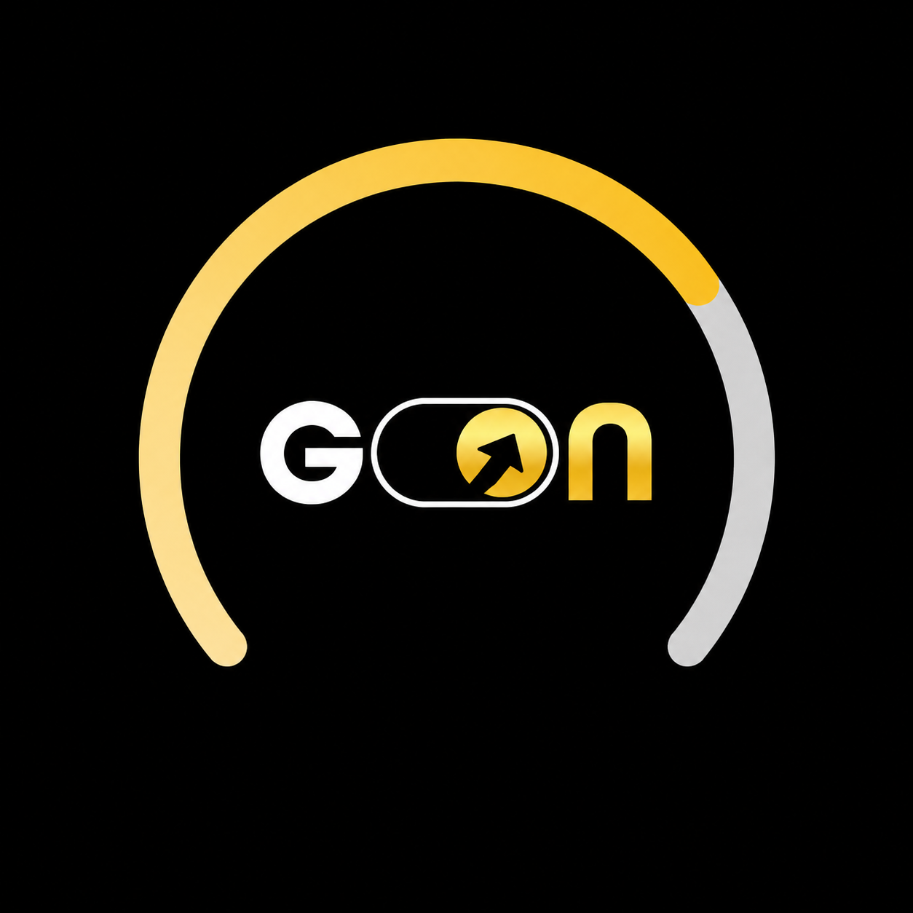

BTCUSDT ▾
⟲ REPLAY
—
Rectangle
OB
Accélération
S/D
TF
1 px
1.5 px
2 px
3 px
4 px
───
╌ ╌
· · ·
REPLAY
⌖
▶
⏭
0.25×
0.5×
1×
2×
5×
10×
QUITTER
Cliquez sur une bougie pour fixer le départ du replay
Couleurs du graphique
Fond
Grille
Bougies hausse
Bougies baisse
Réinitialiser